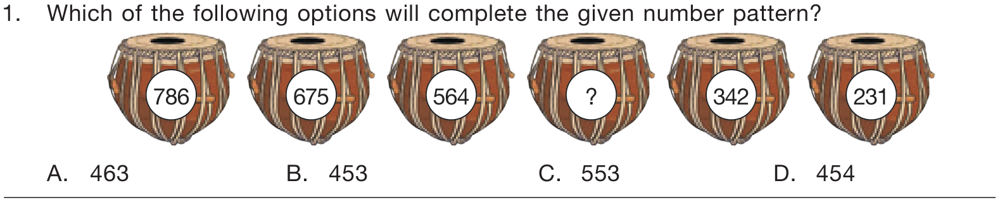
Which of the following options will complete the given number pattern?
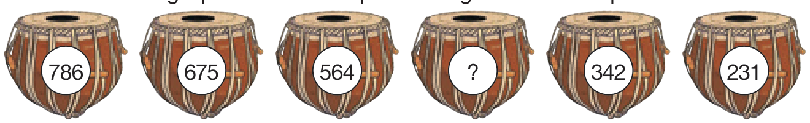
463
453
553
454
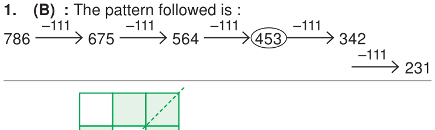
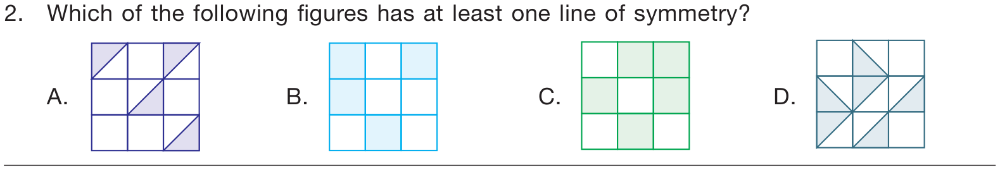
Which of the following figures has at least one line of symmetry?
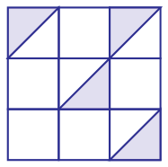
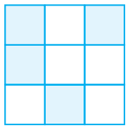
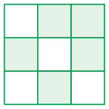
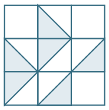
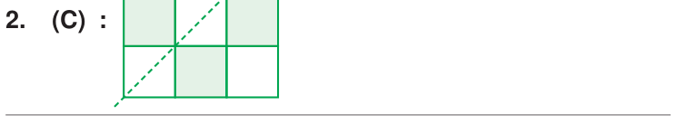
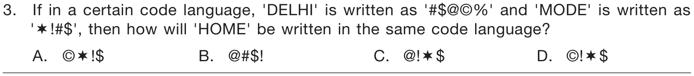
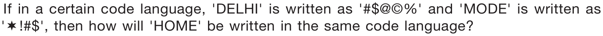
@#$!
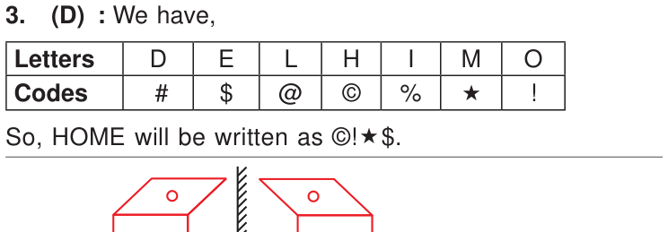
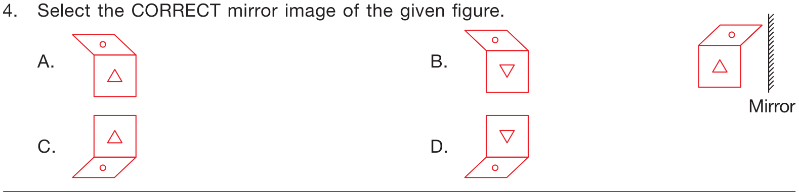
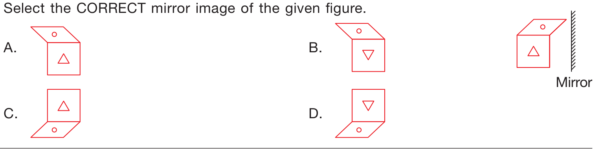
Option A
Option B
Option C
Option D
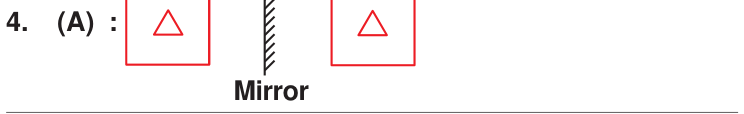
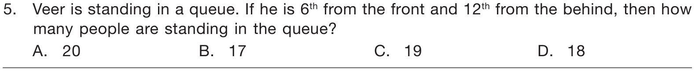
Veer is standing in a queue. If he is 6th from the front and 12th from the behind, then how many people are standing in the queue?
20
17
19
18
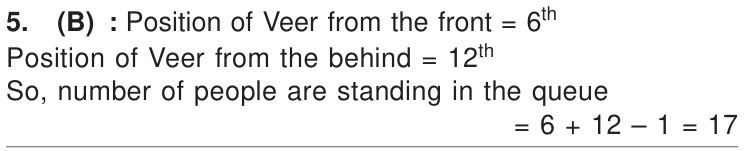
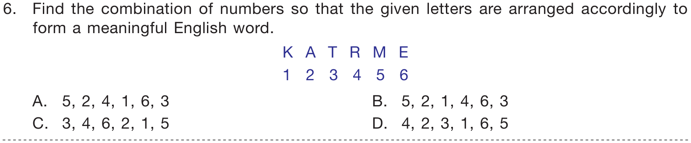
Find the combination of numbers so that the given letters are arranged accordingly to form a meaningful English word.
K A T R M E
1 2 3 4 5 6
5, 2, 4, 1, 6, 3
5, 2, 1, 4, 6, 3
3, 4, 6, 2, 1, 5
4, 2, 3, 1, 6, 5
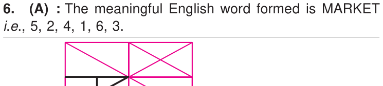
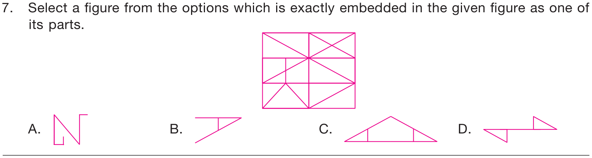
Select a figure from the options which is exactly embedded in the given figure as one of its parts.
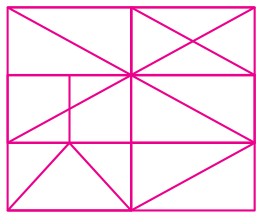
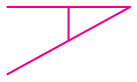
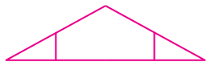
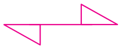
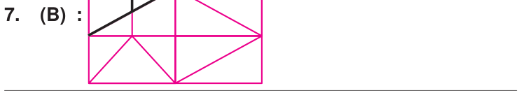
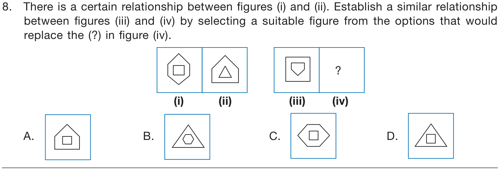
There is a certain relationship between figures (i) and (ii). Establish a similar relationship between figures (iii) and (iv) by selecting a suitable figure from the options that would replace the (?) in figure (iv).
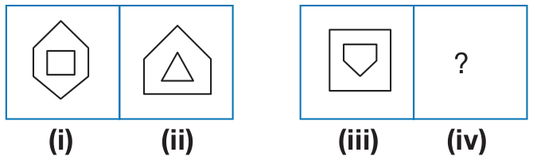
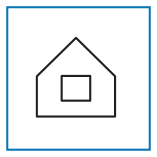
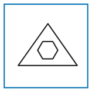
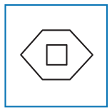
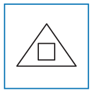
From fig. (i) to fig. (ii), the number of sides of both outer and inner figures reduce by 1.
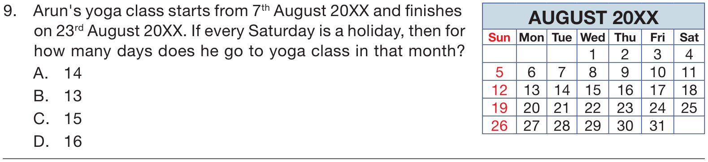
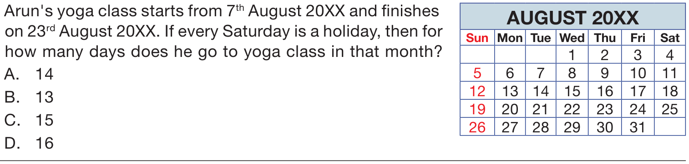
Option A
Option B
Option C
Option D
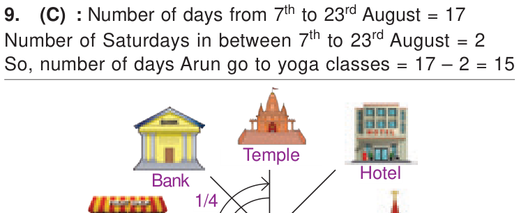
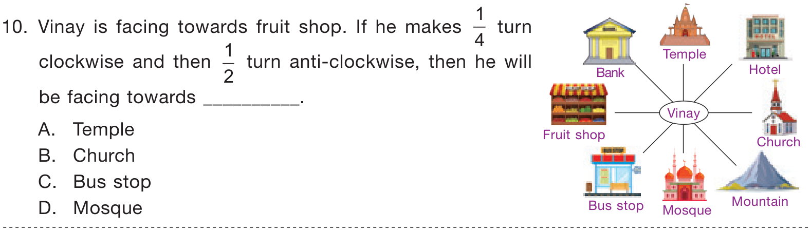
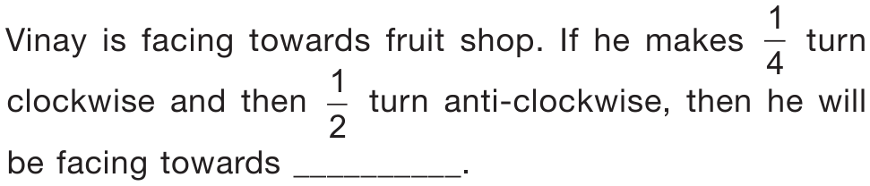
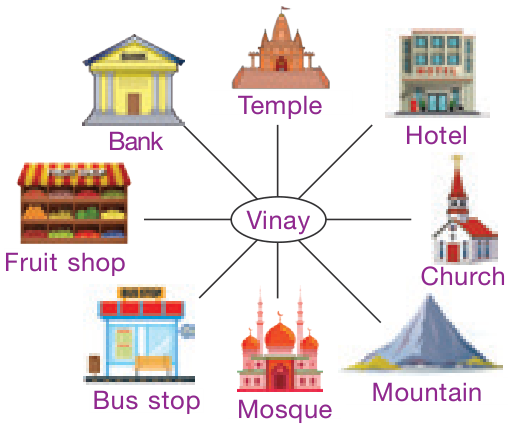
Church
Bus stop
Mosque
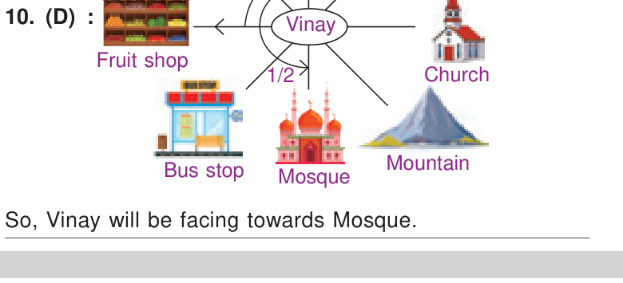
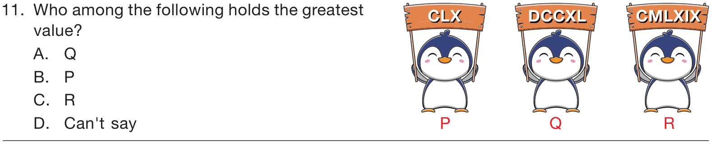
Who among the following holds the greatest value?
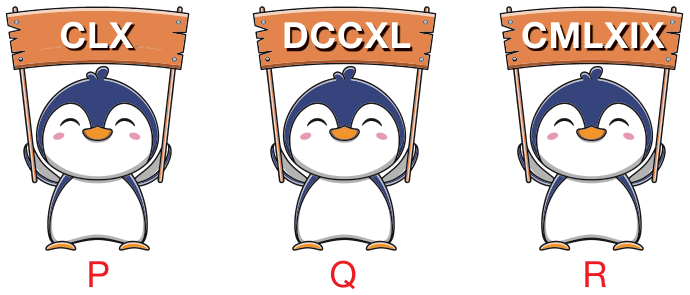
P
R
Can't say
P = CLX = 100 + 50 + 10 = 160 Q = DCCXL = 500 + 200 + 40 = 740 R = CMLXIX = 900 + 50 + 10 + 9
= 969
As, 969 > 740 > 160
So, R holds the greatest value.
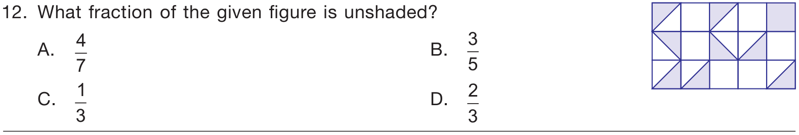
What fraction of the given figure is unshaded?
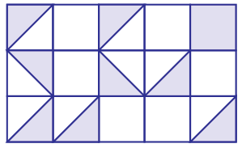
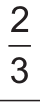
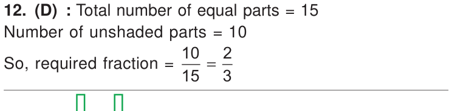
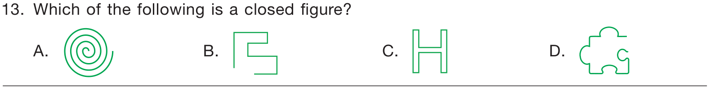
Which of the following is a closed figure?
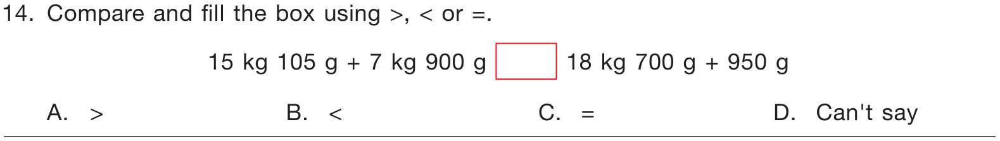
Compare and fill the box using >, < or =.
15 kg 105 g + 7 kg 900 g 18 kg 700 g + 950 g
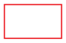
>
<
=
Can't say
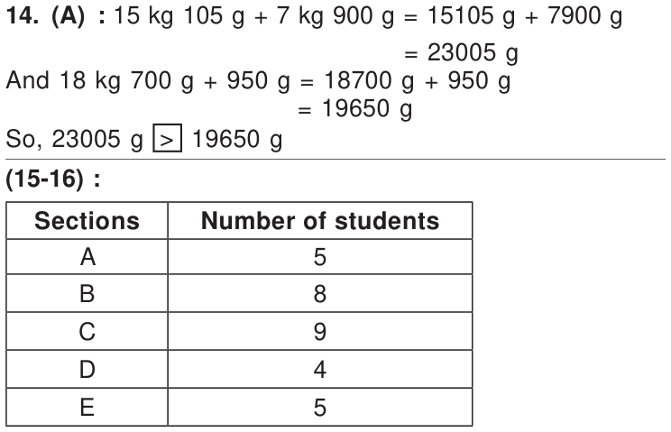
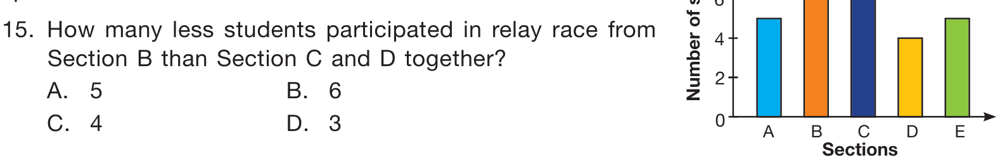
Direction (15-16) : The given bar graph shows the number of students who took part in a relay race from different sections of Class-IV. Study the graph carefully and answer the following questions.
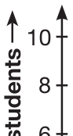
Option A
Option B
Option C
Option D
Number of students participated from Section C and D together = 9 + 4 = 13
Number of students participated from Section B = 8
So, required difference = 13 – 8 = 5
Direction (15-16) : The given bar graph shows the number of students who took part in a relay race from different sections of Class-IV. Study the graph carefully and answer the following questions.
What is the fraction of number of students participated from Section E to the total number of students participated?
None of these
The sum of 5462 and 3258 when each number is rounded off to the nearest hundreds is _____.
9010
8800
8700
8500
5462 when rounded off to the nearest hundreds gives 5500.
3258 when rounded off to the nearest hundreds gives 3300. \ Required sum = 5500 + 3300 = 8800
Option A
Option B
Option C
Option D
Perimeter of given figure = 20 × 3 = 60 cm
250 g
350 g
450 g
500 g
In which of the following options, 7 is not at hundreds place?
2790
3578
4789
5785
In 3578, the digit 7 is at tens place.
Shreya bought 86 kg 475 g sugar and Puneet bought 79 kg 825 g sugar. Who bought less sugar and by how much?
Shreya, 6 kg 650 g
Puneet, 6 kg 650 g
Shreya, 7 kg 350 g
Puneet, 7 kg 350 g
A city has a population of 92582. Round off the population to the nearest hundreds.
92500
92600
93500
92580
Rounded off digit is 5 (hundreds place).
Also, digit at tens place = 8 > 5
So, 92582 when rounded off to nearest hundreds becomes 92600.
Kanika has 4 photo albums. In each album, there are 10 pages. If there are 5 photos on each page, then how many total photos are there in all albums?
200
150
100
180
Number of photo albums = 4
Number of pages in 1 album = 10
So, number of pages in 4 albums = 10 × 4 = 40 Since, number of photos on 1 page = 5
So, number of photos on 40 pages = 40 × 5
= 200
Prateek walked around a triangular park whose sides are 50 m, 68 m and 70 m. Find the total distance covered by him.
180 m
168 m
175 m
Total distance covered by Prateek = 50 m + 68 m + 70 m = 188 m
Aman went on a 15 days trip. He spent 7 days in Manali and rest of the days in Shimla. What fraction of his trip did he spend in Shimla?
A string is 40 m long. A piece measuring 800 cm is cut from it. The remaining piece is then cut into 10 equal pieces. Find the length of each piece.
320 cm
350 cm
400 cm
410 cm
Priya had 500 stickers. She gave 150 stickers to her brother. What fraction of total stickers is left with her?
4105 children visited the zoo in the month of January and 2534 children visited the zoo in the month of February. How many total children visited the zoo in both the months?
6548
6639
6670
6234
Preeti bought a 4-sided cloth, whose each side is equal in measure. What could be the shape of the cloth?
Square
Rectangle
Triangle
None of these
A square is a 4-sided shape whose each side is equal in measure. So, the shape of the cloth could be square.
Sanvi has the digits as shown here. What is the greatest 4-digit number can be formed with the given digits (using each digit only once)?
2150
1025
1052
Greatest 4-digit number formed = 5210
Only P is true.
Only Q is true.
Both P and Q are true.
Neither P nor Q is true.
P. Rounded off the number 584921 to the nearest thousands gives 585000.
So, P is true.
Q. Place value of digit 2 in 25890 = 20000
Place value of digit 5 in 25890 = 5000
So, required sum = 20000 + 5000 = 25000
So, Q is not true.
Option A
Option B
Option C
Option D
Tuesday 1000
Wednesday 1000
Wednesday 1500
Thursday 2000
Find the difference between the perimeters of figure (P) and figure (Q) (not drawn to scale).
4 cm
6 cm
8 cm
None of these
2
3
1
0